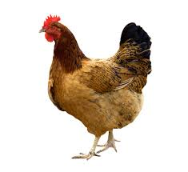

Welcome to the Animal World. This is the section for farm animals.
Sheep
Sheep, ruminant (cud-chewing) mammal of the genus Ovis.
The sheep is usually stockier than its relative the goat; its horns,
when present, are more divergent; it has scent glands in its face and hind feet;
and the males lack the beards of goats. Sheep usually have short tails.
In all wild species of sheep, the outer coat takes the form of hair,
and beneath this lies a short undercoat of fine wool that has been developed into the fleece of domesticated sheep. Male sheep are called rams, the females ewes, and immature animals lambs. Mature sheep weigh from about 80 to as much as 400 pounds (35 to 180 kg).
Hen
Peck, peck, peck…who's making all of that noise? It's a hen!
You may see one of these on a farm or even in your own backyard!
Hens are simply female chickens that are able to lay eggs.
The scientific name for all chickens is Gallus gallus domesticus.
Try saying that five times fast! There are more than 60 types of chickens. Over many generations, various types of chickens have been raised and trained by humans, and most are no longer considered wild animals. People raise chickens, and hens in particular, for their meat and eggs. Some people even choose to keep hens as pets!

Rabbit
Frequently the terms rabbit and hare are used interchangeably,
a practice that can cause confusion. Jackrabbits, for instance,
are actually hares, whereas the rockhares and the hispid hare are rabbits
. Rabbits differ from hares in size, life history, and preferred habitat.
In general, rabbits are smaller and have shorter ears than hares.
They are born without fur and with closed eyes after a gestation
period of 30–31 days. They prefer habitats composed of trees and shrubs,
where they live in burrows dug into the soil. Hares, in contrast,
are larger in size, and they are born fully developed with fur and
open eyes after a gestation period lasting about 42 days.
They prefer open areas such as prairies, where they make their
nests in small open depressions